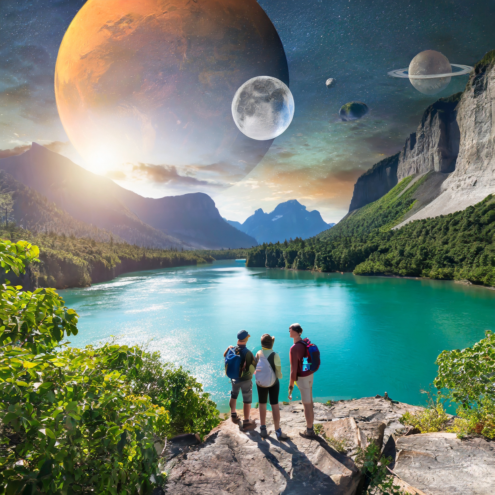
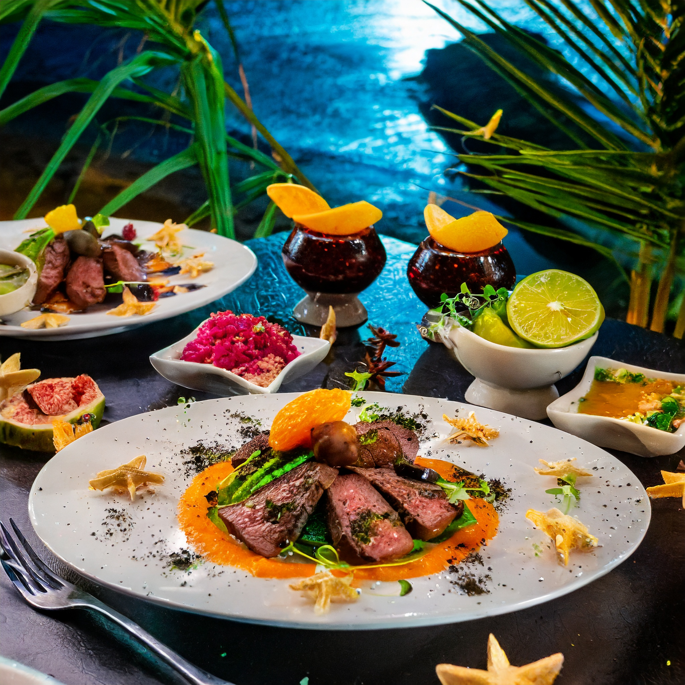

Welcome to Zephyrion Prime, a destination like no other in the galaxy.
Traveling to this remote celestial haven is an adventure in itself, as you
journey through a cosmic kaleidoscope of interstellar wonders, crossing
through cosmic dust clouds and past radiant nebulas. Upon arrival,
you'll be greeted with a breathtaking landscape of crystalline
lakes, lush alien flora, and iridescent skies that will make you
feel like you've stepped into a dream.

Activities
Zephyrion Prime offers a diverse array of activities on its
tropical landscape. Dive into radiant lakes, explore lush jungles,
or embark on thrilling canyon adventures. Engage with the
indigenous culture through rituals and customs, and find
relaxation on the bioluminescent shores. Join celestial gatherings
to stargaze and learn about the universe from expert astronomers.
Whether you seek adventure, nature, or stargazing, this exotic
exoplanet provides unforgettable experiences for all.

Eat
Your gastronomic journey here will be absolutely otherworldly, as
culinary delights blend earthly flavors with indigenous
ingredients. Savor dishes featuring the zest of starfruit and the
richness of galactic truffles, all while dining beneath the
enchanting glow of bioluminescent trees. The fusion of local and
interstellar ingredients creates a gastronomic experience like no
other, inviting you to indulge in the exotic tastes of the cosmos.
Relax
For those seeking relaxation, Zephyrion Prime offers luxurious
floating spas nestled on the serene shores of liquid-sapphire
lakes. Let the therapeutic embrace of extraterrestrial minerals
melt away your stress as you bask in the warm glow of two suns. In
the evenings, stargaze from your private, transparent dome suite,
or take a moonlit stroll along the bioluminescent shores, where
the soft waves harmonize with the twinkling constellations. Here,
on Zephyrion Prime, you'll find a sanctuary of tranquility and
wonder, a celestial escape that will leave you feeling rejuvenated
and inspired.